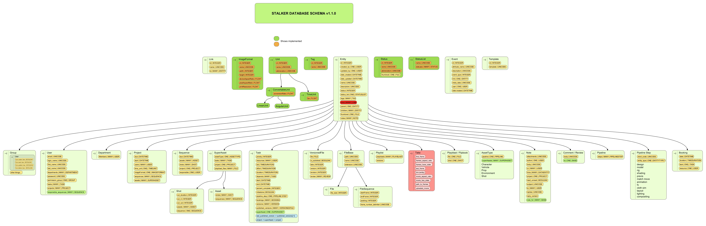

The design of Stalker mentioned in the sections below.
The project is about creating an Open Source Production Asset Management (ProdAM) System called Stalker which is designed for Vfx/Animation Studios. Stalker will be consisting of a framework and the interface those has been build over the framework. Stalker will have a very flexible design that lets the pipeline tds to customize it in a wide variety of perspectives. The out of the package installation will meet the basic needs of majority of studios without too much effort.
The usage of an asset management system in an animation/vfx studio is an obligatory duty for the sake of the studio itself. Even the benefits of the system becomes silly to be mentioned when compared to the lack of even a simple system.
Every studio outside establishes and developes its own asset management system. Stalker will try to be the framework that these proprietry asset management systems will be build over. Thus reducing the work repeated on every big project start
Features:
Will be developed purely in Python (2.6 and over) using TDD (Test Driven Development) practices
SQLAlchemy for the database back-end and ORM
User should be able to select his/her preferred database like PostgreSQL, MySQL, Oracle, SQLite etc. (whatever SQLAlchemy supports)
The user should be able to select both one or different databases for studio specific and project specific data. It is mostly beneficial when the setup uses SQLite. The project specific data could be kept in project folder as an SQLite db file and the studio specific data can be another SQLite db file or another database connection to PostgreSQL, MySQL, Oracle etc. databases. In an SQLite setup, the database can be backed up with the project folder itself.
PyQt and web based user interfaces. The design of the interface should fit in to MTV or MVC template. So it will be easy to write the interface in PyQt or in forms of web application.
The priorities of the development phase is to create the framework first.
Configuration files to let the user to configure all the aspects of the project management. There are going to be interfaces for this setup processes and also it should be like setting up a Django or Trac project from the command line.
The first design of the database schema is shown below:

In this first design all the basic data types tried to be created with an inherited structure. All the classes are derived from the Base data type.
A templating system for the file and folder naming convention will be used like: {projectServer.path}/{project.name}/assets/{asset.name}/ {pipelineStep.name}/{asset.variation.name}/{asset.name}_{asset.type.name} _v{asset.version}.{asset.fileFormat.extension}
file and folders and file sequences could be uploaded to the server as assets, and the server decides where to place the folder or file
there should be callbacks for every CRUD (create/insert, read, update, delete) step like before insert, after insert etc.
pipeline steps should be hierarchically managed to let the project admin create pipeline dependencies between each step, so the system prevents the user to go to the next step before approving the previous ones (like rop dependencies in houdini), or it should keep track of the dependencies instead of preventing
variations/takes of different versions of assets, a variation/take can be dependent to a specific asset version (variation root)
(continiuing)
Let’s dance with Stalker a little bit.
First import some modules:
>>> from stalker.models import project, user, task, imageFormat
>>> from stalker.db import mapper
>>> import datetime
Let’s create a new project called “New Project”:
>>> newProject = project.Project('New Project')
Change the image format of the project:
>>> newProject.imageFormat = imageFormat.ImageFormat( 'HD', 1920, 1080, 1.0 )
Add a couple of users to the project
>>> newUser = user.User(name='Erkan Ozgur',
last_name='Yilmaz',
e-mail='eoyilmaz@gmail.com',
login_name='eoyilmaz',
password = 'secret')
Save and flush the data:
>>> mapper.session.save(newUser)
>>> mapper.session.flush()
Get the users from the database:
>>> query = mapper.session.query(user.User)
Get all the users:
>>> users = query.all()
or select a couple of users by filters:
>>> users = query.filter_by(name='Ozgur')
or select the first user matching query criteria:
>>> users = query.filter_by(name='Ozgur').first()
Now add them to the project:
>>> newProject.users.append(users)
Save the new project to the database:
>>> mapper.session.save(newProject)
>>> mapper.session.flush()
Let’s ask the tasks of one user:
>>> ozgur = query.filter_by(name='ozgur')
>>> tasks = ozgur.tasks
Get the on going tasks of this user:
>>> onGoingTasks = [task for task in ozgur.tasks if not task.isComplete]
Get the on going tasks of this user by using the database:
>>> taskQuery = mapper.sessison.query(user.User).filter_by(name='ozgur').join(task.Task).filter_by(status!='complete')
>>> onGoingTasks = taskQuery.all()
Get the “rig” tasks of ozgur:
>>> rigTasks = taskQuery.join(pipelineStep.pipelineStep).filter_by(name='Rig').all()
As you see all the functionalities of SQLAlchemy is fully supported. At the end all the models are plain old python objects (POPO) and the persistancy part is handled with SQLAlchemy.
| attribute name | type |
|---|---|
| name | unicode |
| width | integer |
| height | integer |
| deviceAspectRatio | float |
| pixelAspectRatio | float |
| printResolution | float |
| attribute name | type |
|---|---|
| name | unicode |
| abbreviation | unicode |
Attributes: